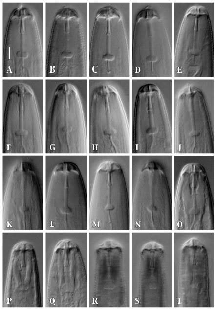

Hirschmanniella lip regions showing stylet knob variation. A-E: H. santarosae females (A is the holotype);F-J: H. santarosae males (F is the allotype); K-M: H. pomponiensis females; N-O: H. pomponiensis males; P-Q: H. belli females; R-S: Hirschmanniella sp. females, Yuma isolate; T: Hirschmanniella sp. males, Yuma isolate (Scale bar = 5 µm for all).